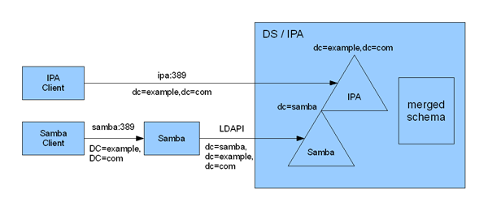
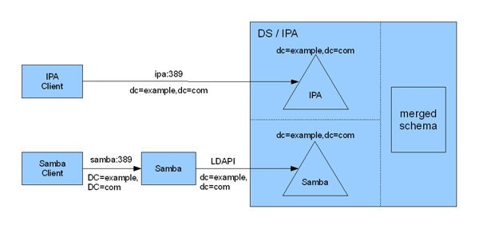
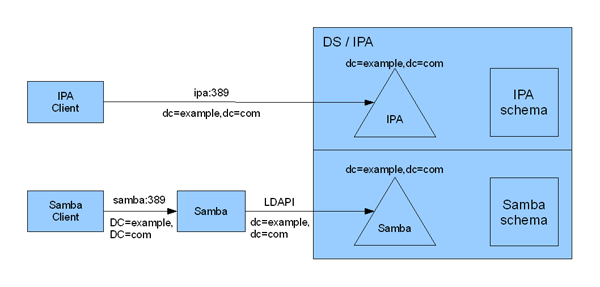
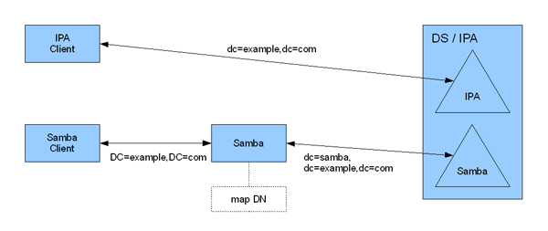
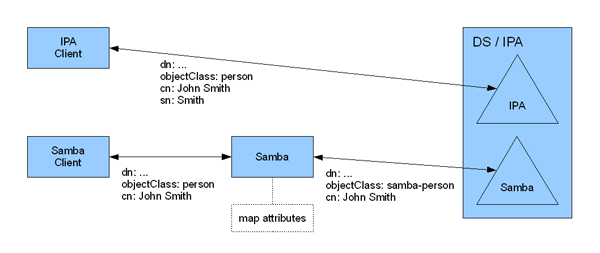

IPAv3_Unified_DIT#
Overview#
This page describes how to unify the IPA and Samba DIT’s in the same DS.
The main issue is that IPA and Samba DIT’s have completely different structure and schema so they have to be stored in separate locations. This could be done in several methods:
using same DS instance and same partition,
using same DS instance but separate partitions,
using separate DS instances.
Regardless of the methods, DS/IPA and Samba processes will run on the same machine. Since both applications will be using port 389, separate virtual hostnames will be used to distinguish the services. In the diagrams below, IPA clients will access IPA LDAP service using the ipa:389 address, and Samba clients will access Samba LDAP service using the samba:389 address.
Same Instance Same Partition#
In this configuration Samba tree will be stored as a subtree underneath the IPA tree. This requires renaming Samba name space and schema to avoid conflicts with IPA.

Ipa3-ldap-integration1.png#
Same Instance Separate Partitions#
In this configuration IPA and Samba trees will be stored in the same instance but in separate partitions. This will avoid renaming the Samba name space but it still requires renaming the Schema to avoid conflicts with IPA schema. The DS may need to be modified to support this configuration. Also, each partition will need to be bound to separate virtual hostnames (e.g. ipa.example.com and samba.example.com) so IPA client and Samba server can access the right tree by specifying the right hostname.

Ipa3-ldap-integration2.png#
Separate Instances#
In this configuration IPA and Samba trees will be stored in separate instances. IPA instance will be listening to port 389 while Samba instance will be listening to private LDAPI interface. This doesn’t require renaming the name space nor the schema, but the administrator will be required to maintain multiple DS instances.

Ipa3-ldap-integration3.png#
Name Space Translation#
IPA and Samba are serving the same domain/realm (e.g. EXAMPLE.COM), so by default they will use the same LDAP name space (e.g. dc=example,dc=com). If they are using the same instance/partition there will be a conflict.
This can be solved by translating Samba’s name space by storing the Samba DIT as a subtree of the IPA DIT. Currently Samba is already doing some schema mapping. It could to be extended to do name space translation.
For example, when a Samba client sends a request to Samba using the dc=example,dc=com name space, Samba will map that request into dc=samba,dc=example,dc=com then send it to DS. When the DS returns the results, Samba will map them back to dc=example,dc=com.

Ipa3-ldap-integration4.png#
Name space translation includes not only the DN but also any attributes that can contain a DN.
Schema Mapping#
IPA is using the standard LDAP schema and Samba uses Active Directory schema to store objects in the DS. If they are using the same instance there will be a conflict because a DS instance can only support 1 schema.
This can be solved by mapping AD schema into different names. Samba is already doing some schema mapping. It could be extended to map conflicting schema.
For example, in the standard LDAP schema the person object class requires cn and sn. However, in AD schema the person object class only requires cn. With this method the AD person will be renamed to samba-person when stored in DS.

Ipa3-ldap-integration5.png#